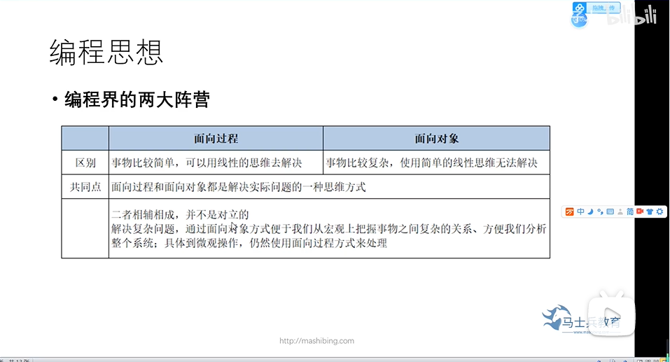
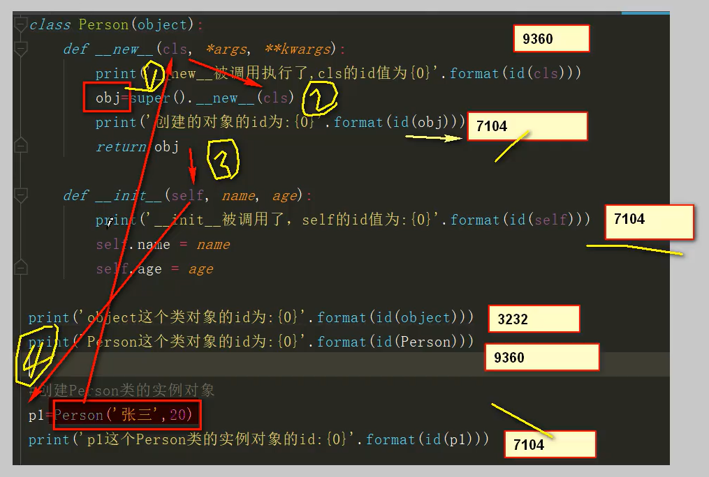
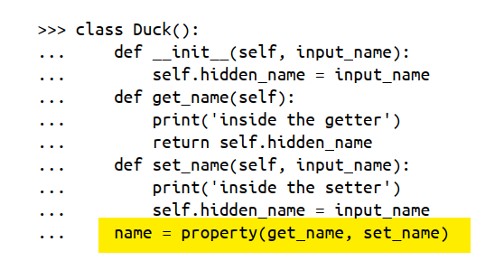
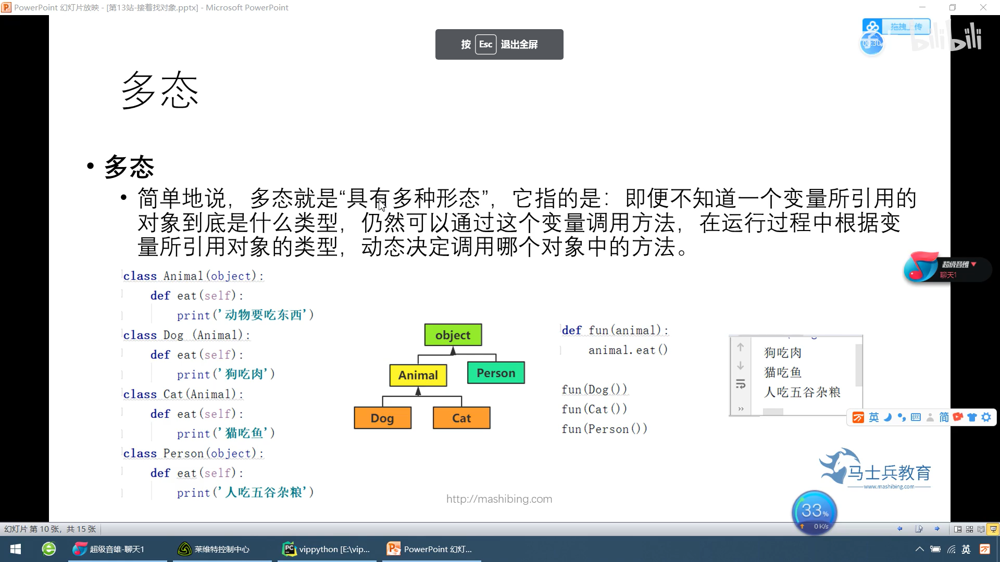
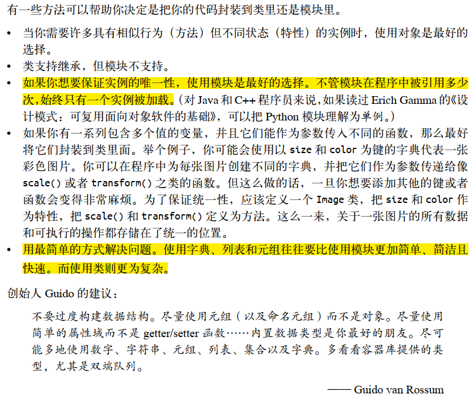

Python的抽象魔法--类

面向对象使得我们可以只去关注一件事情的参与者就好了，而不用关注参与者以外的东西。
面向对象简介
类(Class): 用来描述具有相同的属性和方法的对象的集合。它定义了该集合中每个对象所共有的属性（attribute）和方法(method)。对象是类的实例(instance)。
类属性：类属性在整个实例化的对象中是公用的。类属性定义在类中且在函数体之外。类属性通常不作为实例使用。
局部变量：定义在方法中的变量，只作用于当前实例的类。
实例变量：在类的声明中，属性是用变量来表示的，这种变量就称为实例变量，实例变量就是一个用 self 修饰的变量。
方法重写：如果从父类继承的方法不能满足子类的需求，可以对其进行改写，这个过程叫方法的覆盖（override），也称为方法的重写。
继承：即一个派生类（derived class）继承基类（base class）的字段和方法。继承也允许把一个派生类的对象作为一个基类对象对待。例如，有这样一个设计：一个Dog类型的对象派生自Animal类，这是模拟”是一个（is-a）”关系（例图，Dog是一个Animal）。
类的好处
在面向对象编程中，术语对象大致意味着一系列数据（属性）以及一套访问和操作这些数据的方法。那为什么我们要使用对象而不是使用全局变量和函数呢？其中一个很重要的原因就是多态。
多态（ polymorphism）源自希腊语，意思是“有多种形态”。它使得可以对不同类型的对象执行相同的操作，而这些操作就像“施了魔法”一样能够正常运行。而且通过定义类的方法，我们甚至可以在不知道方法指向哪种对象的前提下就可以实现对对象的操作，而且操作的行为也会随着对象所属的类而不一样。拿方法count()举一个简单的例子：
x=['hello, World',[1,2,'e','e',4]]
print(x.count('e'))我们并不关心x到底是什么对象，我们关心的只是x里边到底有多少个e。只要x里有一个名为
count()的方法，借助这个方法我们能实现我们希望返回的整数，这就足够了。每当无需知道对象是什么样的就能对其执行操作时，都是多态在起作用。
如果走起来像鸭子，叫起来像鸭子，那么它就是鸭子
本书前面反复提到了类，并将其用作类型的同义词。从很多方面来说，这正是类的定义—— 一种对象。每个对象都属于特定的类，并被称为该类的实例。
如果一个类的对象为另一个类的子集，前者就是后者的子类，后者是前者的超类。
例如，如果你在窗外看到一只鸟，这只鸟就是“鸟类”的一个实例。鸟类是一个非常通用（抽象）的类，它有多个子类：你看到的那只鸟可能属于子类“云雀”。你可将“鸟类”视为由所有鸟组成的集合，而“云雀”是其一个子集。因此“云雀”为“鸟类”的子类，而“鸟类”为“云雀”的超类
但在面向对象编程中，子类关系意味深长，因为类是由其支持的方法定义的。类的所有实例都有该类的所有方法，因此子类的所有实例都有超类的所有方法。有鉴于此，要定义子类，只需定义多出来的方法（还可能重写一些既有的方法）。
类属性和方法
类属性：类中方法外的变量称为类属性，被该类的所有对象所共享。因为生成的实例中都有一个类指针指向定义的类，因此所有的实例可以共享该类属性，且类属性可以被访问和直接赋值修改。
类的属性定义在类下边，缩进与def命令相同，所有类均可访问该属性：
class People(object):
name = 'Jack' #类属性(公有)
__age = 12 #类属性（私有）类的特殊属性
类的特殊属性：
dict：用来获得对象或者实例对象所绑定的所有属性和方法的字典
class:对象所属的类
bases:对象的父类类型元素
mro:类的层次结构
subclasses：子类
doc：类的注释
类的特殊方法
- init : 对创建的对象进行初始化
- del : 析构函数，释放对象时使用
- repr : 打印，转换
- setitem : 按照索引赋值
- getitem: 按照索引获取值
- len: 获得长度
- cmp: 比较运算
- call: 函数调用
- add: 加运算
- sub: 减运算
- mul: 乘运算
- truediv: 除运算
- mod: 求余运算
- pow: 乘方
init()方法
类定义了 init() 方法，类的实例化操作会自动调用 init() 方法。需要注意的是有的时候可能需要初始化属性，但不确定给该属性赋什么值或者就是想让该属性为空，那么可以给该属性赋值为None
class Complex:
def __init__(self, realpart, imagpart):
self.r = realpart
self.i = imagpart
x = Complex(3.0, -4.5)
print(x.r, x.i) # 输出结果：3.0 -4.5new()方法
该方法主要用来写实例的创建方法。

先通过new方法来创建需要的对象，再通过init方法来初始化对象
专有方法的重写
我们可以通过重写类的方法实现对类的专有方法进行更改：
class Vector:
def __init__(self, a, b):
self.a = a
self.b = b
def __str__(self):
return 'Vector (%d, %d)' % (self.a, self.b)
def __add__(self,other):
return Vector(self.a + other.a, self.b + other.b)
v1 = Vector(2,10)
v2 = Vector(5,-2)
print (v1 + v2)类方法和静态方法定义
当我们在解决实际问题时，可能会遇到有一些方法是属于类而不属于实例的方法，如对于一个三角形类，判断输入参数是否是三角形的方法就可以看做是属于类的方法。定义类的私有方法有两个办法，一个办法是利用装饰器@staticmethod定义一个静态方法。另外一种方法是利用装饰器@classmethod用装饰器定义一个类的方法
两者的区别是类方法会默认第一个输入参数是类的名称参数cls（类比self）：
from math import sqrt
class Triangle(object):
def __init__(self, a, b, c):
self._a = a
self._b = b
self._c = c
@staticmethod
def is_valid(a, b, c):
return a + b > c and b + c > a and a + c > b
def perimeter(self):
return self._a + self._b + self._c
def area(self):
half = self.perimeter() / 2
return sqrt(half * (half - self._a) *
(half - self._b) * (half - self._c))
def main():
a, b, c = 3, 4, 5
# 静态方法和类方法都是通过给类发消息来调用的
if Triangle.is_valid(a, b, c):
t = Triangle(a, b, c)
print(t.perimeter())
# 也可以通过给类发消息来调用对象方法但是要传入接收消息的对象作为参数
# print(Triangle.perimeter(t))
print(t.area())
# print(Triangle.area(t))
else:
print('无法构成三角形.')
if __name__ == '__main__':
main()class Student():
count=0
def __init__(self,name) -> None:
self.name=name
Student.count+=1
@classmethod
def Count(cls):
print(cls.count,"instances have been distributed")
stu1=Student("xiaoming")
Student.Count()类的对象（实例）
object类
object类是所有类的父类，在我们声明类不指明继承的类时，默认继承该类。
- 内置方法dir（）可以查看指定对象的所有属性
- str()，如何打印对象信息，我们经常对该方法进行重写。不进行重写的时候在打印对象的时候会默认输出对象所属的类以及在内存中的位置#return string,不然无效
创建自定义类
首先引入一个简单的示例：
class Person:
def set_name(self, name):
self.name = name
def get_name(self):
return self.name
def greet(self):
print("Hello, world! I'm {}.".format(self.name))
foo=Person()
print(foo.get_name())
foo.set_name('xiaoming')至于self是什么，其实从例子里也能看出，self就是方法的第一个参数，而在这个例子中，每次使用set_name和greet这些方法时，foo都会作为第一个参数传递给这个方法，所以我们用self来命名，因为它指向对象本身。显然， self很有用，甚至必不可少。如果没有它，所有的方法都无法访问对象本身——要操作的属性所属的对象。与以前一样，也可以从外部访问这些属性。 比如可以写
print（foo.name）
动态语言
Python作为一门动态语言，我们可以根据自己的需要为创建的实例动态地单独绑定我们需要的属性和方法。
def test():
print("My name is Xiaoming")
class Student():
def __init__(self,name,age) -> None:
self.name=name
self.age=age
def print_name(self):
print("my name is %s"%self.name)
stu1=Student("张三",20)
stu2=Student("李四",18)
stu1.print_1=test
stu1.print_1()
#stu2.print_1()
#AttributeError: 'Student' object has no attribute 'print_1'限制实例属性的绑定
有的时候我们并不希望我们我们对实例可以绑定任意属性，这时我们可以定义__slots__变量来进行限定属性绑定的范围
class Student():
__slots__=('age',''body')对于上述类生成的实例，我们只能绑定age和body两个属性。但需要注意的是这一变量在类的继承时并不会进行继承。
属性或者方法的私有化
在属性和方法定义时前边加上一个”__”可以把类的名称或者属性私有化，私有化之后的类的名称或者属性是不能在外部进行访问的。
class Site:
def __init__(self, name, url):
self.name = name # public
self.__url = url # private
def who(self):
print('name : ', self.name)
print('url : ', self.__url)
def __foo(self): # 私有方法
print('这是私有方法')
def foo(self): # 公共方法
print('这是公共方法')
self.__foo()
x = Site('菜鸟教程', 'www.runoob.com')
x.who() # 正常输出
x.foo() # 正常输出
x.__foo() # 报错私有属性的访问和更改
在属性或者方法前加’‘可以实现属性私有化，但这也会导致外部代码不能访问该属性（仍然可以通过instance._class nameattribute name访问，实际上是对变量名字进行了重整），于是python添加了一个在类或者属性前加一个’_’对类的访问加以限制（虽然仍然可以通过_obj._var实现对该变量的访问，这个符号的含义就是希望我们不要去轻易修改和访问）。但是这样会使得访问和更改都变得比较麻烦，于是python提供了装饰器@property来将有限制的属性或者方法的访问或者修改变得更加便捷。可以理解为将负责把一个方法变成属性进行调用：
from unicodedata import name
class Person(object):
def __init__(self,name,age) -> None:
self._name=name
self._age=age
@property
def name(self):
return self._name
@name.setter
def name(self,name):
self._name=name
@property
def age(self):
return self._age
stu=Person('小明',18)
print(stu.name)
print(stu.age)
stu.name='小王'
#stu.age=22
print(stu.name)
print(stu.age)
基于类的编程
类的继承
类的继承使得我们的代码可以实现”自动更新”。继承类的代码格式如下：
class DerivedClassName(BaseClassName):
<statement-1>
.
.
.
<statement-N>BaseClassName（实例中的基类名）必须与派生类定义在一个作用域内。除了类，还可以用表达式，基类定义在另一个模块中时这一点非常有用:
class DerivedClassName(modname.BaseClassName):多继承格式与单继承类似,只需在类名称后面的括号内依次写出父类的名称即可,不过需要注意的是当方法在多个父类中出现且有差异时 ,会调用最左边的包含该父类的方法
方法重写
在子类继承父类时，我们可以通过重新对父类的函数进行定义来实现对类的方法的覆盖或者是重写。
方法的补充（对父类方法进行补充）
有的时候我们希望对类的方法进行重写时或许希望可以借助原有类的内容，而不是将父类中的方法进行覆盖，这时python中的super()方法提供了这样的一个方法。
#在需要借助父类方法的地方写入
super().method name(*args,**kwargs)#不需要写selfclass Person():
def __init__(self,name) -> None:
self.name=name
print("My name is %s"%self.name)
class student(Person):
def __init__(self, name,ID) -> None:
self.ID=ID
super().__init__(name)
#亦可super(student,self).__init__(name)
print("My ID is %s"%self.ID)
ming=student("xiaoming",88800)使用
super()调用父类方法的一个好处是不需要写父类的名称，这增加了代码的可移植性和重用性。
多态

组合(composition)或聚合(aggregation)
类的继承适用于子类和父类存在很多相似点的两个类之间。但还存在一种情况是一个类是另外一个类的组成部分，这时用组合或者聚合是一种不错的选择。比如鸭子有“尾巴”这样的关系
class Hair():
def __init__(self,height) -> None:
self.height=height
class Student():
def __init__(self,hair) -> None:
self.hair=hair
def ppp(self):
print(self.hair.height)
hair_xiaoming=Hair(88)
stu=Student(hair_xiaoming)
print(id(stu.hair))
print(id(hair_xiaoming))
stu.ppp()命名空间和作用域
在python中，类中变量的作用域与类的方法内的变量的作用域以及类定义外边的作用域是三个独立的作用域，也就是说在这三个域内的变量是互不影响的。如果要在类的方法内部使用类中的变量，需要借助nonlocal对需要使用的作用域进行声明。如果要在类外使用同一变量，则需要用global进行声明。
def scope_test():
def do_local():
spam = "local spam"
def do_nonlocal():
nonlocal spam
spam = "nonlocal spam"
def do_global():
global spam
spam = "global spam"
spam = "test spam"
do_local()
print("After local assignment:", spam)
do_nonlocal()
print("After nonlocal assignment:", spam)
do_global()
print("After global assignment:", spam)
scope_test()
print("In global scope:", spam)def p():
#直接访问会报错的
#print(a)
global a
a=3
print(a)
a=1
p()‘__’,’_’保留用法
以两个或者一个下划线开头和结尾的名称都是python的保留用法。
function.name:
function.doc:
类和模块的使用场景
